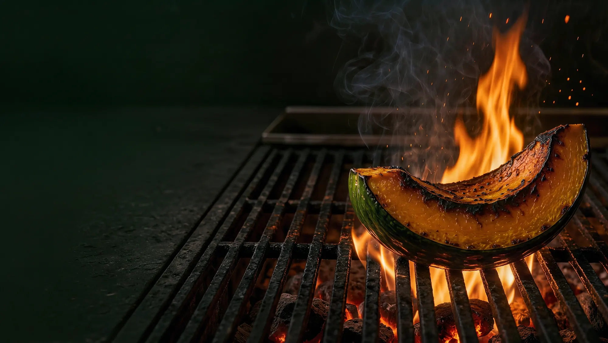
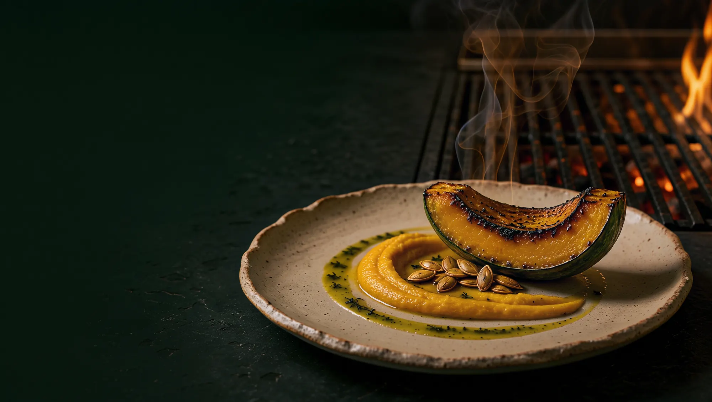
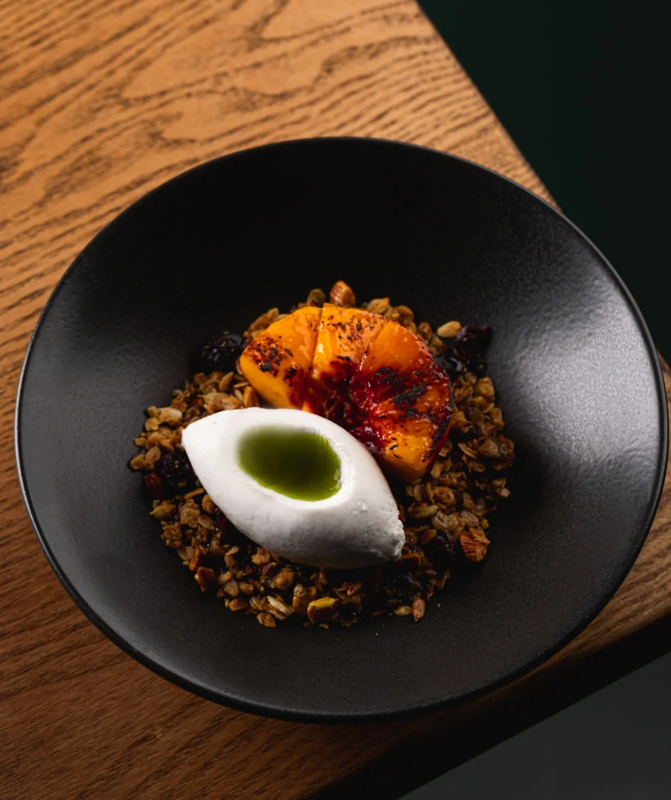
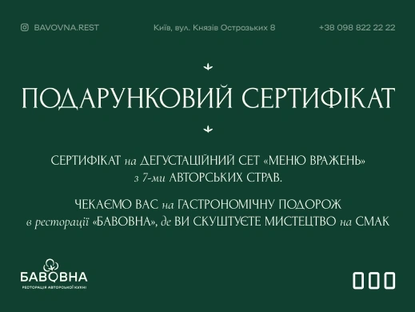

À la carte
Закуски, основні й десерти. Закуски від 150 ₴, основні від 1 700 ₴. Щодня з 11:00 до 21:30.
Страви à la carteЩодня 11:00–22:00 · Київ, «Арсенал»
Усе, що потрапляє на тарілку, спершу торкається вогню.


Філософія
Страви починаються не на кухні, а на фермах і локальних городах.
Скандинавська чистота смаку, японські коджі та ферментація, французькі соуси.
Відкрита. Шеф і команда готують просто перед гостями.
Закуски, основні й десерти. Закуски від 150 ₴, основні від 1 700 ₴. Щодня з 11:00 до 21:30.
Страви à la carteДегустаційний сет із семи страв на відкритому полум'ї за 3 900 ₴ на гостя.
Страви меню враженьВідкритий вогонь працює весь день. Від хруста до березового морозива: кожна страва знає смак диму.

Страви у «Бавовні» починаються не на кухні, а на фермах і локальних городах. Ми працюємо з локальними виробниками й обираємо продукти за сезоном, коли смак найвиразніший. На кухні розкриваємо їх по-новому: через вогонь, ферментацію й сучасні техніки, а головну роль лишаємо за продуктом. Так працює наш принцип «від лану до столу».
Між вашим столом і грилем немає стіни. Видно кожен рух шефа, кожну іскру й кожну тарілку перед подачею.


Бренд-шеф і власниця
Кухня Бавовни починається з її саду й сімейних рецептів. Смородину для олії до морозива нуазет команда збирає в саду шефа. Печиво до десерту «Бавовна» печеться в чавунній пательні за рецептом її родини.
Від Скандинавії вона взяла чистоту смаку, від Японії ферментацію й коджі, від Франції соуси й техніку. А вогонь об'єднує все це в одну мову.
@smirnova_uaРесторанна премія «СІЛЬ» · 2026
Нагороду отримала бренд-шеф Альона Смірнова.
À la carte
Закуски, основні страви, десерти й сніданки щодня з 11:00 до 21:30.
Свіжеспечений бріош з трьома видами місо-масла на вибір: житній хліб, копчені томати та гречка.
Хруст із яловичини мізками, копченими на полум’ї, та кремом із сиру раклет і чорного часнику. Запечене в солі яблуко, бджолиний пилок.
Смажений гарбуз у глазурі з дріжджів, гель з обліпихи, крем із томленого гарбуза, перловка коджі, соус з моркви.
Фламбована устриця зі смаженою підчеревиною, тоніком зі смаженого огірка й настурції та гелем з кислого яблука.
Равіолі з лакто-огірка, шпинату та желе з бузини з начинкою з фламбованих мідій і крем-фрешу, соус з капусти та ванілі.
Українська форель, копчена над полум’ям, з сальсою з ферментованої полуниці, кімчі з черемші та маринованим аґрусом.
Судак, смажений на вогнищі, з пудрою з кейлу, кремом з яблука й печеного кореня селери та соусом зі смаженої гречки.
Ніжки молодої перепілки з фундуком і петрушкою, смажені на вогнищі, зі стрілками часнику, кремом із копченого цукіні та деміглясом із фенхелем.
Витримана українська яловичина з вогнища, равіоль з буряку з черешнею, гель з ферментованого ревеню.
Маршмелоу з шоколадно-вишневою начинкою, обпалений на полум’ї, на вишневій гілці з печивом із чавунної пательні за сімейним рецептом шефа.
Морозиво нуазет з еспумою зі смаженої перловки, хрустким твілом і газованим виноградом. Олія з листя смородини з саду шефа.
Морозиво з випареного березового соку на ніжному кастело з персиком та гірчицею, маринованою в темному пиві.
Соус верде, витриманий сир Нарцис Карпат, підкопчене насіння соняшника.
Черкаська фермерська качка, 30 годин маринаду й диму, крем-фреш, яйце пашот.
Карамелізована з медом, олія тархуна, хурма.
Сом, засолений з кавою, на свіжій бріоші, еспума голландез.
Кюлі з полуниці, олія з листя інжиру, хурма.
Якщо у вас алергія на будь-який продукт, повідомте офіціанта.
Щоп’ятниці
Шефський стіл у ресторації «Бавовна» — це можливість побачити процеси високої кухні зблизька, почути історії про продукти, техніки та сезонні поєднання.
Меню складається з 5 авторських страв, створених ексклюзивно для цього вечора.
Сертифікати
Сертифікат діє за попереднього бронювання столу.

Діє з 13:00 за умови попереднього бронювання столика
3 900 ₴ Придбати
Діє з 13:00 за умови попереднього бронювання столика
4 100 ₴ Придбати

Діє за умови попереднього бронювання столика
3 100 ₴ ПридбатиБронювання
Залиште заявку, і вона надійде нам у Telegram. Ми передзвонимо, щоб підтвердити час. Якщо зручніше голосом, зателефонуйте.
+380 98 822 22 22Для компаній від 8 гостей уточнимо деталі телефоном.
Візит